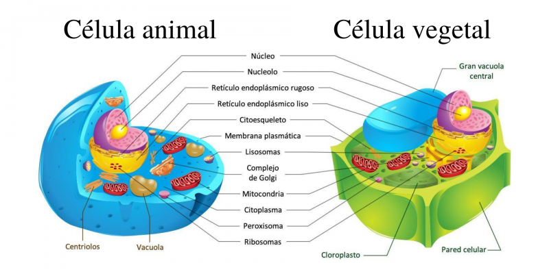
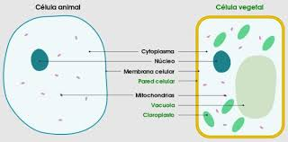

La célula animal y la célula vegetal son dos tipos de células eucariotas que presentan varias diferencias en su estructura y función.
Acontinuación se muestran algunas de ellos:
| Característica | Célula animal | Célula vegetal |
| Forma | Con forma variable, ya sea redonda o ireegular (amorfa). | Con forma más regular. Generalmente rígida y rectangular. |
| Pared celular | No tiene pared celular. | Tiene una pared celular compuesta principalmente de celulosa. |
| Cloroplastos | No tienen cloroplastos. | Tienen cloroplastos que realizan la fotosíntesis. |
| Vacuola | Tiene pequeñas vacuolas o puede no presentar ninguna. | Tiene una vacuola central grande. |
| Nutrición | Obtienen nutrientes de otros organismos (heterótrofa). | Producen su propio alimento a través de la fotosíntesis (autótrofa). |
| Energía | Obtienen energía de los nutrientes que consumen gracias a las mitocondrias. | Producen energía a través de la fotosíntesis gracias a los cloroplastos y las mitocondrias. |
| Reserva de energía | Almacenan energía en forma de glucosa o lípidos. | Almacenan energía en forma de almidón. |
| Tamaño | Generalmente más pequeñas (10-30 μm). | Generalmente más grandes (10-100 μm). |
| Movimiento | Puede moverse utilizando flagelos o pseudópodos. | Generalmente no se mueven, ya que están fijadas a un soporte. |
| Centriolos | Presentes en la mayoría de las células animales. | Generalmente ausentes en las células vegetales. |

